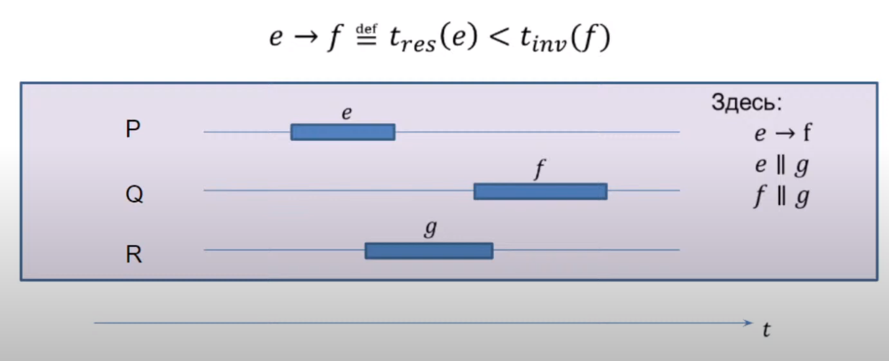
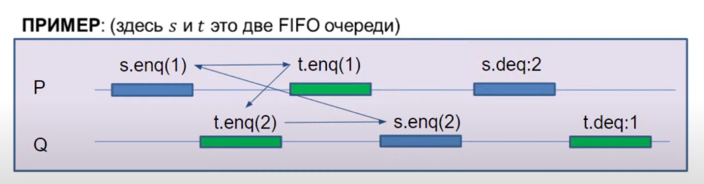
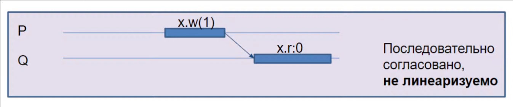
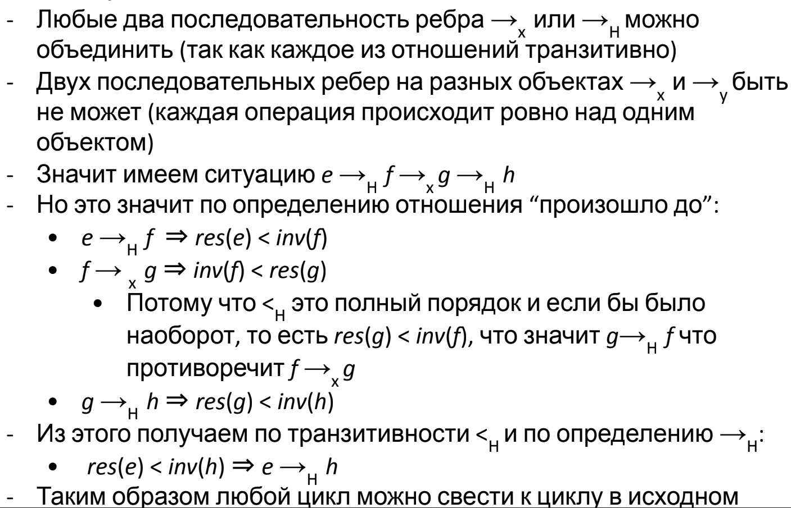
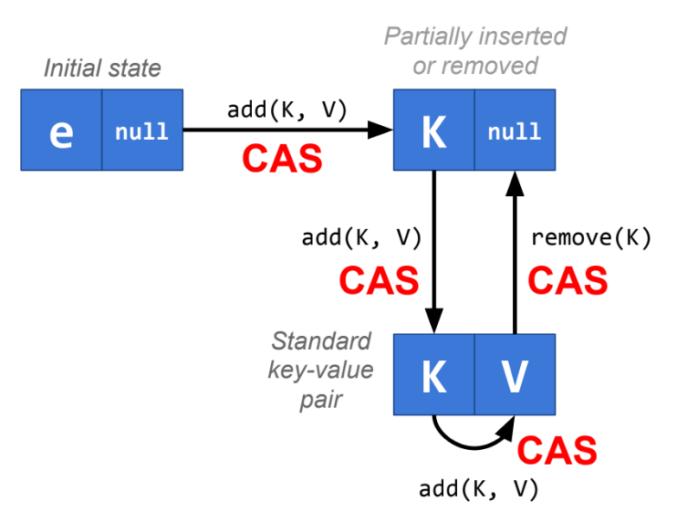
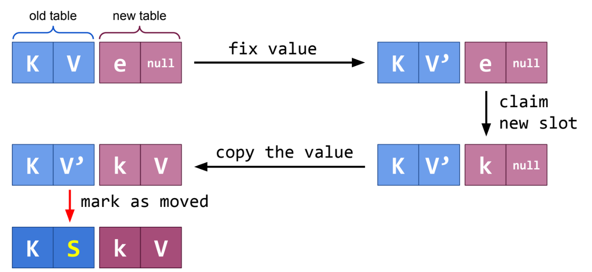

Лекция 1.1. Введение и мотивация
Закон Мура и «The free lunch is over?»
Количество транзисторов удваивается каждые два года, частота ядра раньше также росла экспоненциально, но в двухтысячных перестала. Производительность отдельно взятого ядра с тех пор стала расти медленнее, стали ускоряться за счёт большего числа ядер.
Закон Амдала
N – число потоков, P – доля параллельного кода, S - ускорение кода
$$ S = \frac{Time\ on\ 1\ core}{Time\ on\ N\ cores} = \frac{1}{1 - P + \frac{P}{N}} $$
при \(N \to \infty \) максимальное ускорение кода \( \frac{1}{1 - P} \)
Параллелизм на уровне инструкций (ILP)
Нет зависимости по данным, (1) и (2) можно выполнить параллельно.
e = a + b // 1
f = c + d // 2
Способы использования ILP:
- Конвейер
- Суперскалярное исполнение
- Внеочередное исполнение
- Переименование регистров
- Спекулятивное исполнение
- Предсказание переходов
- Длинное машинное слово (VLIW)
- Векторизация (SIMD)
Примеры архитектуры многопроцессорных компьютеров
Симметричная мультипроцессорность (SMP)

Ассиметричный доступ к памяти (NUMA)

Виды многопоточных систем:
- Одновременная многопоточность (SMT) – в каждый данный момент может исполняться несколько потоков.
- Временная многопоточность (TMT) – в каждый данный момент может исполняться только один поток.
Операционные системы
Типы операционных систем
- Однозадачные
- Система с пакетными заданиями (batch processing)
- Многозадачные / с разделением времени (time-sharing)
- Кооперативная многозадачность (cooperative multitasking)
- Вытесняющая многозадачность (preemptive multitasking)
Основные понятия в современных ОС
- Процесс – владеет памятью и ресурсами. ОС создаёт иллюзию того, что каждый процесс имеет абстрактную вычислительную систему в своём полном распоряжении.
- Поток – контекст исполнения внутри процесса. В одном процессе может быть несколько потоков, все потоки работают с общей памятью процесса.
- В научных работах исторически сложилось называть потоки процессами и использовать большие буквы:
P,Q, ...
В теории мы их будем смешивать, хоть это и некорректно
Формализм
Нужна формальная модель параллельных вычислений для того, чтобы использовать её в доказательствах корректности алгоритмов, а также невозможности построения тех или иных алгоритмов и минимально-необходимые требования для тех или иных алгоритмов.
А ещё формальная модель нужна для формализации отношений между прикладным программистом и разработчиком компилятора и системы исполнения кода.
Модели программирования
- «Классическое» однопоточное / однозадачное (можем использовать ресурсы многоядерной системы только запустив множества разных, независимых задач)
- Многозадачное программирование (можем использовать ресурсы многоядерной системы в рамках решения одной задачи)
- Модель с общей памятью (рассматриваем в рамках этого курса)
- Модель с передачей сообщений (распределенное программирование)
Общие объекты
Потоки выполняют действия над общими, разделяемыми объектами. В этой модели не важны операции внутри потоков: вычисления, обновления регистров процессора, обновления регистров потока.
Общие переменные
Это простейший тип общего объекта, базовый строительный блок для многопоточного алгоритма. У общих переменных есть операции чтения и записи, а также значение определенного типа.
Модель с общими переменными – это хорошая абстракция современных многопроцессорных систем и многопоточных ОС. На практике, это общая память процесса, которая доступна для чтения и записи всем потокам, исполняемым в данном процессе.
В теоретических трудах общие переменные часто называют регистрами.
Многопоточные программы в общем случае недетерминированы, в отличие от однопоточных программ. Поэтому мы говорим, что программа А имеет свойство Р, если программа А имеет свойство Р при любом исполнении.
Моделирование работы программы
Рассмотрим модель чередования, где исполнение потоков чередуется в произвольном порядке. Тогда у нижеуказанной программы есть три исхода, она не может завершиться в состоянии {0, 0}.
@JCStressTest
@State
@Outcome(id = "0, 1", expect = Expect.ACCEPTABLE)
@Outcome(id = "1, 0", expect = Expect.ACCEPTABLE)
@Outcome(id = "1, 1", expect = Expect.ACCEPTABLE)
public class SimpleTest1 {
int x;
int y;
@Actor
public void threadP(IntResult r) {
x = 1;
r.r2 = y;
}
@Actor
public void threadQ(IntResult r) {
y = 1;
r.r1 = x;
}
}
Однако на практике у нас всё сломалось, все четыре результата возможны, при этом {1, 1} реже всех. Почему? Потому что тестировали на TSO (Total Store Order) модели памяти, где операции записи кладутся в буфер, и чтение в некоторых случаях было выполнено раньше, чем запись «дошла» до памяти.
Лекция 1.2. Lock-free stack и Michael-Scott queue
План лекции
- Неблокирующиеся алгоритмы
- Lock-free Treiber Stack
- Michael-Scott Queue
Mutual exclusion
Aka mutex или lock, только один поток может держать блокировку.
Atomic counter
val l = Lock()
var counter = 0
fun incAndGet(): Int {
l.lock()
try {
return ++counter
} finally {
l.unlock()
}
}
Эта блокировка грубая. Нет гарантии прогресса в том случае, если CPU отберут, потому что все другие потоки будут ждать наш поток.
Lock-freedom
Гарантирует прогресс в системе. Базовая операция (реализована в железе): CAS (Compare-And-Set) – CAS(p, old, new) атомарно проверяет, что значение по адресу p атомарно совпадает с old и заменяет его на new.
Counter
fun getAndInc(): Int {
while (true) {
cur := c
if CAS(&c, cur, cur + 1) {
return c
}
}
}
Stack
fun pop(): Int {
head := H
while (true) {
if CAS(&H, head, head?.Next) {
if head == null: return null
return head.Value
}
}
}
}
fun push(x: Int) {
while (true) {
head := H
newHead := Node {Value: x, Next: head}
if CAS(&H, head, newHead): return
}
}
fun top(): Int? {
head := H
return head?.Value
}
Последовательная согласованность (Sequential consistency) – это такое последовательное исполнение, которое учитывает порядок внутри потоков, но не учитывает синхронизацию между потоками.
Elimination for Stack
Оптимизация следующая: заведём дополнительный массив фиксированного размера, push сначала пойдёт в его рандомную ячейку (или рядом, если та была уже занята), а pop смотрит несколько рядом стоящих ячеек и ищет занятую. Если операция дождалась (push – pop'а, pop – нового элемента), то всё хорошо, иначе идём в стек и действуем по выше описанному алгоритму.
Таким образом, push и pop могут встретиться, поменяться данными и не дергать стек.
Queue
Операция добавления элемента должна переписать Next у Tail и подвинуть Tail на последний элемент. Если мы перепишем Next, но не успеем подвинуть Tail (какой-то другой поток тоже начал писать) всё сломается.
Helping: пусть если поток хочет положить элемент в конец очереди, а у последнего элемента уже есть Next, он просто поможет подвинуть Tail на элемент вперёд и опять попытается добавить свой элемент уже в следующей итерации. Тогда при добавлении элемента и передвижении Tail его CAS для передвижения Tail не пройдёт – хвост уже перенесли.
fun enqueue (x: int) {
newTail := Node { Value = x, N = null}
while (true) { // CAS loop
tail := T
if CAS(&tail.N, null, newTail) {
// 'newTail' just added, move the tail forward
CAS (&T, tail, newTail)
return
} else {
// help other enqueue operations
CAS(&T, tail, tail.N)
}
}
}
Если убрать ветку else, то алгоритм станет блокирующимся -- новые потоки будут ждать CAS(&T ...).
Удаление реализуется так же, как в стеке.
Лекция 2.1. Определения и Формализм
Физическая реальность
Как мы узнали на прошлой лекции, модель чередования фундаментально ошибочна — она не предполагает реально параллельное исполнение. Кроме того, в реальном мире невозможно синхронизироваться — за один такт свет не успеет физически дойти от ядра до ядра.
На физических событиях в целом нельзя построить отношение полного порядка.
Модель "произошло до"
Исполнение системы это пара \((H, \to_H)\) (history)
- \(H\) - множество базовых операций \(e, f, g \dots\) (чтение и запись памяти)
- \(\to_H\) - частичный (транзитивный, антирефлексивный, ассиметричный) порядок на операциях, называемый "произошло до в исполнении \(H\)"
Идейно мы в этой модели поддерживаем параллелизм, т.к. нет требования полного порядка.
Операции \(e\) и \(f\) параллельны, если \(e \not\to f \operatorname{\&} f \not\to e\), это обозначается \(e \parallel f\)
Сложная операция \(e\) состоит из двух простых событий: \(inv(e)\) и \(res(e)\) (invoke, result).
Простые события полностью упорядочены отношением \(<_H\). По определению \(e \to_H f\) тогда и только тогда, когда \(res(e) <_H inv(f)\). Так как порядок полный, у нас есть глобальное время.

Система — набор всех возможных исполнений системы.
На практике отношение "произошло до" предоставляется моделью памяти языка. (std::atomic, volatile, создание и join потоков, либы)

Последовательное исполнение
Исполнение системы последовательно, если все операции линейно упорядочены отношением \(\to\), то есть: $$\forall e, f \in H : (e = f) \lor (e \to f) \lor (f \to e)$$
Конфликты и гонки данных
Если одна из двух операций над одной и той же переменной - запись, то эта пара операций называется конфликутующей, они не коммутируют.
Если при конкретном исполнении две конфликтующие операции произошли параллельно, то произошла гонка данных.
Программа называется корректно синхронизированной, если при любом допустимом (по спеку языка) исполнении нет гонок данных.
Правильное исполнение
Сужение исполнения \(H\) на поток \(P\) это исполнение, где остались только операции, происходящие в потоке \(P\). Обозначается \(H\mid_P\).
Исполнение правильное, если его сужение на каждый поток является последовательным. Мы рассматриваем только такие исполнения.
В реальности современные процессоры в силу конвейерности не последовательны в рамках одного ядра, но это спрятано от юзера.
Программный порядок (program order) - сужение отношения "произошло до" на отдельные потоки.
Сужение истории \(H\) на объект \(x\) - множество операций над \(x\), обозначается \(H\mid_x\)
Допустимое исполнение
Последователньая спецификация объекта проверяется на любом последовательном сужении истории на объект. Если она выполнена, то исполнение допустимо.
Но какое параллельное исполнение допустимо? Если получится сопоставить допустимое последовательно исполнение, то наше параллельное исполнение будем считать допустимым.
Однако есть разные варианты сопоставления, они называются условия согласованности. Есть базовое требование к условиям - корректные последовательные программы должны быть согласованы при их однопоточном исполнении.
Нас интересуют только два условия: последовательная согласованность (sequential consistency) и линеаризуемость.
Последовательная согласованность
Исполнение последовательно согласованно, если можно сопоставить эквивалентное ему допустимое последовательное исполнение, которое сохраняет программный порядок – порядок операций на каждом потоке.
Есть одна проблема - последовательно согласованное исполнение на нескольких объектах по отдельности не последовательно согласовано в целом.

Таким образом, нет смысла говорить, что отдельный объект последовательно согласован; надо говорить про систему в целом. Например, JMM последовательно согласована.
Линеаризуемость
Исполнение линеаризуемо, если можно сопоставить эквивалентное ему допустимое последовательное исполнение, которое сохраняет порядок "произошло до".
Это самый строгий критерий.

Теорема: исполнение линеаризуемо тогда и только тогда, когда линеаризуемо исполнение на каждом объекте по отдельности.
Доказательство:
- Тогда: очевидно.
- Только тогда: Объединим линеаризацию на каждом объекте \(\to_x\) и исходное \(\to_H\). Транзитивно замкнём полученное отношение. Докажем от противного, что замыкание ациклично. 
Операции над линеаризуемыми объектами называются атомарными.
Линеаризуемость в глобальном времени
В глобальном времени исполнение линеаризуемо тогда и только тогда, когда можно выбрать точки линеаризации \(e\) такие, что \(t_{inv}(e) < t(e) < t_{res}(e)\)
Исполнение системы с операциями над линеаризуемыми объектами можно анализировать в модели чередования.
В JMM
Операции над volatile полями линеаризуемы, а над не volatile полями нарушена даже последовательная согласованность (без синхронизации). Если же программа корректно синхронизирована, то есть нет гонок, то JMM гарантирует последовательно согласованное исполнение даже не над volatile переменными.
В реальности компилятор вставляет инструкцию mfence, который сбрасывает буфер записи.
volatile это медленно.
Лекция 2.2. Построение атомарных объектов и блокировки
Декомпозиция исполнения это пятерка \(H, G, \to_G, inv, res\), где
- \(H\) это множество операций, \(\forall e \in H : e \subset G\)
- \(G\) это множество событий
- \(\to_G\) - отношение "произошло до" на \(G\)
- \(inv, res : H \to G\)
- \(\forall e \in H : inv(e) \to_G res(e)\)
- Все точки \(e\) лежат между \(inv\) и \(res\): \(\forall e \in H, g \in e, g \neq inv(e), g \neq res(e): inv(e) \to_G g \to_G res(e)\)
$$\forall e, f \in H : E \to_H f \stackrel{def}{=} res(e) \to_G inv(f)$$
Исполнение \(H, \to_H\) линеаризуемо, если можно найти исполнение \(L(H), \to_{L(H)}\), называемое линеаризацией \(H\), такое что:
- \(L(H) = H\)
- Сохраняется старое отношение \(\to_H\): \(e \to_H f \implies e \to_{L(H)} f\)
- Исполнение последовательно: \((e = f) \lor (e \to_{L(H)} f) \lor (f \to_{L(H)} e)\)
- \(L(H)\) допустимо, т.е. выполняет последовательные спецификации всех объектов
Точки линеаризации это функция \(p : H \to G\) вместе с линеаризацией \((L(P), \to_{L(P)})\), где \(P = p(H)\)
Теорема: Исполнение \(H\) линеаризуемо тогда и только тогда, когда можно выбрать точки линеаризации \(p\) согласовано с линеаризацией, т.е. \(e \to_{L(H)} f \iff p(e) \to_{L(P)} p(f)\)
Есть точки линеаризации \(\implies\) линеаризуемо
Определим \(L(H)\) как \(e \to_{L(H)} f \iff p(e) \to_{L(P)} p(f)\), тогда старое отношение сохраняется, исполнение последовательно (порядок полный) и допустимо. Докажем, что \(\to_{L(H)}\) сохранняет \(\to_H\).

Линеаризуемо \(\implies\) есть точки линеаризации

Это неверно. Однако, можно доопределить точки и тогда искомое очевидно верно. В частности, в модели глобального времени можно найти искомые точки.
Таким образом, для доказательство линеаризуемости достаточно предъявить точки линеаризации, но их может не быть и тогда надо доказывать по-другому (сложно).
Если объект линеаризуем, то можно опустить детали его реализации.
Пусть мы написали в псевдокоде:
def seq:
op1
op2
Тогда \(op1 \to op2\) и \(inv(seq) := inv(op1), res(seq) := res(op2)\) и каждая строчка атомарна, что позволяет нам анализировать через чередование.
Не любой линеаризуемый алгоритм можно реализовать таким образом.
Блокировки
Mutex = mutual excluesion = lock = блокировка. Обладает свойством взаимного исключения, т.е. что выполнение критических секций не может быть параллельным, а следовательно оно будет линеаризуемо. Это требование корректности протокола взаимной блокировки.
Первая попытка
shared boolean want
def lock:
while want:
pass
want = True
def unlock:
want = False
Не работает, т.к. два потока могут увидеть want == false, записать want = true и перейти в критическую секцию.
Вторая попытка
threalocal int id # 0 or 1
shared boolean want[2]
def lock:
want[id] = True
while want[1 - id]:
pass
def unlock:
want[id] = False
Докажем взаимное исключение от противного через чередование, т.к. все строки атомарны.
Пусть два потока зашли одновременно в критическую секцию. Тогда поток id зашел последним в то время, как поток 1 - id уже был в секции. Но в секцию можно зайти только после чтения want[1 - id] == false, это противоречит тому что 1 - id в секции.
Однако, есть проблема - оба потока могут записать want[id] = true и вечно ждать друг друга.
Добавим новое условие: отсутствие взаимной блокировки (deadlock-freedom): если несколько потоков пытаются войти в критическую секцию, то хотя бы один из них должен войти в критическую секцию за конечное время (если критические секции выполняются за конечное время).
Третья попытка
threalocal int id # 0 or 1
shared int victim
def lock:
victim = id
while victim == id:
pass
def unlock:
pass
Доказать взаимное исключение тривиально (как в попытке 2). Докажем deadlock-freedom. Если два потока одновременно крутятся в цикле, то victim == 0 & victim == 1 - противоречие.
Есть другая проблема - если второй поток не хочет зайти в секцию, то victim == 0 всегда и первый поток не зайдёт.
Добавим третье условие: отсутствие голодания (stavation-freedom): если какой-то поток пытается войти в критическую секцию, то он войдёт в критическую секцию за конечное время (если критические секции выполняются за конечное время).
Алгоритм Петерсона
threadlocal int id # 0 or 1
shared boolean want[2]
shared int victim
def lock:
want[id] = true
victim = id
while want[1 - id] and victim == id:
pass
def unlock:
want[id] = false
Гарантирует все наши условия.
Докажем взаимное исключение. Пусть поток id зашел в CS последним, когда 1 - id уже был в CS. Тогда либо want[1 - id] == false или victim != id.
want[1 - id] == false. Это противоречит тому чтоwant[1 - id] == true, т.к.1 - idв CS.victim != id.- Если
1 - idзашел по причинеvictim != 1 - id, то противоречие. - Остается случай
1 - idзашел по причинеwant[id] = false, но тогда он зашел до исполнения первой строки потокомid, но тогда для потокаidвыполненоvictim == id.
- Если
Взаимной блокировки нет в силу victim.
Голодания нет т.к. want[1 - id] == false.
Таким образом, для реализации лока достаточно иметь атомарные регистры чтения/записи.
Алгоритм Петерсона для N потоков
threadlocal int id # 0 to N - 1
shared int level[N]
shared int victim[N]
def lock:
for j in 1 .. N - 1:
level[id] = j
victim[j] = id
while exist k: k != id and level[k] >= j and victim[j] == id:
pass
def unlock:
level[id] = 0
Удовлетворяет тем же требованиям, но алгоритм не очень честный. Невезучий поток может ждать, пока другие потоки \(\mathcal O(N^2)\) раз войдут в критическую секцию. Хотелось бы ждать линейно.
Алгоритм Лампорта (булочника)
threadlocal int id # 0 to N - 1
shared boolean want[N] init false
shared int label[N] init 0
def lock:
want[id] = true
label[id] = max(label) + 1
while exists k: k != id and want[k] and (label[k], k) < (label[id], id):
pass
def unlock:
want[id] = false
Идея: получаем номерок label, который больше всех предыдущих. Но может быть проблема: разные потоки получили один и тот же номер. Поэтому сравниваются не только номерки, но и номера потоков.
Ключевое свойство: если поток P выполнил первые две строки до Q, то он войдёт в секцию раньше. Это более сильное требование, называемое First come, first served:
- Метод
lockсостоит из двух последовательных секций:
def lock:
doorway
waiting
- Секция
doorwayявляетсяwait free(не ждём другие потоки) - Пусть время исполнения
doorwayэто \(DW_i\), а операцийwaitingэто \(WT_i\). - Если \(DW_i \to DW_j\), то \(res(WT_i) \to re(WT_j)\).
Это немножко нечестно - метки должны быть бесконечными. Однако, можно устроить "бесконечные" метки на конечных регистрах.
Обычно говорят, что алгоритм честный, если он FCFS.
Блокировка позволяет избежать гонок.
Test-and-set (compare-and-set) spin lock
def lock:
while !locked.CAS(0, 1):
pass
def unlock:
locked = 0
На практике мы не хотим кушать CPU, пока ждём, поэтому немного spinимся, а потом спим через ОС. На реальном железе не масштабируется и в реальности не используется.
Тонкая блокировка
Мы хотим использовать различные блокировки на разных переменных. Но это опасно - можно получить неверное исполнение. Например:

Есть принцип 2-Phase Locking:
- Берём блокировки на все необходимые объекты
- Выполняем операцию
- Отпускаем все блокировки
Брать и отпускать блокировки можно в любом порядке.
2PL всегда линеаризуемо (точка линеаризации между фазами).
Все следующие операции 2PL:
def proc1:
mutex1.lock
mutex2.lock
obj1.work
obj2.work
mutex2.unlock
mutex1.unlock
def proc2:
mutex1.lock
obj1.work
mutex2.lock
obj2.work
mutex2.unlock
mutex1.unlock
def proc3:
mutex1.lock
mutex2.lock
obj1.work
obj2.work
mutex1.unlock
mutex2.unlock
С помощью блокировок можно сделать любой объект линеаризуемым. Однако есть проблема: может произойти deadlock - если два процесса ждут друг друга (с двумя блокировками). Это решается с помощью выстраивания блокировок в иерархию, где мы захватываем сначала более приоритетные блокировки.
Лекция 3.1 Практические построения на списках
Множество на односвязном списке
Это казалось бы игрушечная структура данных, но она используется в очень полезном skip listе.
Пусть в списке у нас есть граничные элементы \(-\infty, +\infty\).
- Элементы упорядочены по возрастанию
- Мы ищем окно (
cur,next), такое чтоcur.key\(<\)k\(\leq\)next.keyиcur.N = next - Если мы ищем элемент, то он будет в
next(или его не будет) - Новый элемент будем добавлять между
curиnext.
Псевдокод:
class Node(var N: Node, val key: Int)
val head = Node(−∞, Node(∞, null))
fun findWindow(key): (Node, Node) {
cur := head
next := cur.N
while (next.key < key):
cur = next
next = cur.N
return (cur, next)
}
fun contains(key): Boolean {
(cur, next) := findWindow(key)
return next.key == key
}
fun add(key) {
(cur, next) := findWindow(key)
if (next.key != key)
cur.N = Node(key, next)
}
fun remove(key) {
(cur, next) := findWindow(key)
if (next.key == key)
cur.N = next.N
}
Проблема, удаление последовательных вершин в различных потоках может не сработать.
a -> b -> c -> d станет a -> c -> d и b -> d, в итоге c не удалено.
Можно навесить грубую синхронизацию, но это неэффективно.
Тонкая синхронизация
Можно навесить лок на каждую вершину. Тогда поток будет держать блокировку на cur и next. В коде это будет выглядеть так:
fun findWindow(key): (Node, Node) {
cur := head; cur.lock()
next := cur.N; next.lock()
while (next.key < key):
cur.unlock(); cur = next
next = cur.N; next.lock()
return (cur, next)
}
fun contains(key): Boolean {
(cur, next) := findWindow(key)
cur.unlock(); next.unlock()
return next.key == key
}
Оптимистичная синхронизация
- Найти окно без синхронизации.
- Взять блокировки на
curиnext. - Проверить, что
cur.N == next. - Проверить, что
curне удален. - Выполнить операцию.
- При ошибке попробовать заново.
При проверке, что cur не удален, мы держа блокировку на него, ищем его еще раз в линию.
class Node(@Volatile var N: Node, val key: Int)
fun contains(key): Boolean {
while (true) {
(cur, next) := findWindow(key)
cur.lock(); next.lock()
if (!validate(cur, next))
cur.unlock(); next.unlock(); continue
return next.key == key
}
}
fun validate(cur, next): Boolean {
var node = head
while(node.key < cur.key):
node = node.N
return (cur, next) == (node, node.N)
}
Ленивая синхронизация
Будем лениво удалять. В Node добавляем removed: Boolean. Удаление будет происходить в две фазы:
node.removed = true- логическое удаление- Физическое удаление
Тогда валидация тривиальна:
fun validate(cur, next) = !cur.removed && !next.removed && cur.N == next
Неблокирующая синхронизация
Т.к. N volatile, то мы увидели состояние памяти на момент записи в N. Поэтому мы можем не брать блокировку при поиске. Тогда:
fun contains(key): Boolean {
(cur, next) := findWindow(key)
return next.key == key
}
Наивная запись на CAS опять не работает. a -> b -> c -> d станет a -> c -> d и b -> d, в итоге c не удалено. Проблема в том, что мы не знали, что b уже удалено. Казалось бы, можно написать двусвязный список, но нет, это очень сложно. Вместо этого объединим N и removed в одну переменную, пару (N, removed) и таким образом запретим делать изменения на N, если нода удалена. В java это AtomicMarkableReference, реализовано через обертку.
fun findWindow(key): (Node, Node) {
retry: while(true):
var cur = head, next = cur.N
boolean[] removed = new boolean[1]
while (next.key < key):
val node = next.N.get(removed)
if (removed[0]):
// удалим физически
if (!cur.N.CAS(next, node, false, false)):
continue retry
next = node
else:
cur = next
next = cur.N
// тут еще проверка, что next не удален
return (cur, next)
}
fun contains(key): Boolean {
(cur, next) = findWindow(key)
return next.key == key
}
fun add(key) {
while(true):
(cur, next) = findWindow(key)
if (next.key == key):
return
val node = Node(key, next)
if (cur.N.CAS(next, node, false, false)):
return
}
fun remove(key) {
while(true):
(cur, next) = findWindow(key)
if (next.key != key)
return // false
val node = next.N.getReference();
if (next.N.CAS(node, node, false, true)):
// помогаем findWindow удалить физически
cur.N.CAS(next, node, false, false)
return // true
}
Лекция 3.2. Relaxed Algorithms.
BFS
Вспомним обычный BFS:
val Q = Queue<Node>()
start.distance = 0
Q.add(start)
while Q.isNotEmpty() {
u := Q.remove()
d := u.distance
for (v : u.edges) {
if v.distance != INF: continue
v.distance = d + 1
Q.add(v)
}
}
Просто заменить Queue на ConcurrentQueue не поможет, т.к. первый поток удалит первую вершину из очереди, все остальные потоки выйдут из цикла и алгоритм станет однопоточным.
Можем считать число вершин в обработке вместо Q.isNotEmpty(). Тогда есть другая проблема: мы не гарантируем порядок обработки вершин, это никакой не BFS. Но нас это не очень и волнует, ибо мы будем обновлять расстояние только если оно меньше того, которое уже посчитано:
val Q = Queue<Node>()
start.distance = 0
Q.add(start)
activeNodes = 1
while activeNodes > 0 {
u := Q.remove()
d := u.distance
for (v : u.edges) {
if v.updateDistIfLower(d + 1) {
v.distance = d + 1
Q.add(v)
activeNodes++
}
}
activeNodes--
}
С одной стороны, мы одну вершину обрабатываем одну вершину несколько раз, но с другой — мы параллельны. На реальных графах это профит.
Алгоритм Дейкстры
Дейкстра это примерно то же самое, что у нас, только у нас приоритетная очередь. Быстрая приоритетная очередь это миф, лучший случай это куча с локами. Но мы можем написать почти приоритетную очередь. Тогда алгоритм всё ещё будет верным, но у нас опять будут инверсии.
Multi-Queue
Возьмём T независимых очередей с локами. Операции пусть будут работать над случайно выбранными очередями.
- Добавление: добавляем в случайную очередь
- Удаление: берем две случайные очереди и удаляем из лучшей.
Лекция 4.1. Алгоритмы без блокировок: Построения на регистрах
Мы не можем требовать, чтобы алгоритм не использовал блокировку, ибо это нечто непонятное. Вместо этого мы будем использовать одно из безусловных условий прогресса
Отсутствие помех (obstruction-freedom)
Если несколько потоков пытаются выполнить операцию, то любой из них должен выполнить её за конечное время, если все другие потоки остановить в любом месте.
Это условие слабое.
Отсутствие блокировок (lock-freedom)
Если несколько потоков пытаются выполнить операцию, то хотя бы один из них должен выполнить её за конечное время (независимо от действия/бездействия других потоков).
На практике используется именно lock-freedom.
Для hard realtime систем это условие недостаточно, так как нет условия, что все потоки вовремя все сделают.
Отсутствие ожидания (wait-freedom)
Если какой-то поток пытается выполнить операцию, то он выполнит ее за конечное время независимо от действия или бездействия других потоков.
С блокировкой объект не может быть obstruction-free.
Регистр
Последовательная спецификация:
class Register:
int r
def write(x):
r = x
def read():
return r
Физические регистры не атомарны
- Без ожидания
- Один читатель
- Один писатель
- Чтение и запись одновременно приводит к непредсказуемым результатам
- Безопасны: после завершения записи будет прочитано последнее записанное значение
Построим более полезный регистр. Это сугубо теоретическое упражнение, но идеи из него применимы на практике.
Небезопасный регистр бесполезен.
Регулярные регистры
При чтении выдает либо последнее записанное значение, либо одно из тех значений, что сейчас пишутся.

Атомарные регистры
Исполнение линеаризуемо.

Регулярный SRSW булев регистр
Дано: безопасный SRSW булев регистр
safe shared boolean r
threadlocal boolean last
def write(x):
if x != last:
last = x
r = x
def read():
return r
Так как у нас только один писатель и регистр булев, то мы просто не перезаписываем последнее записанное значение.
Регулярный SRSW регистр, M значений
Дано: Регулярный SRSW булев регистр
Запоминаем M значений в унарном коде с помощью M регистров. Тогда индекс первого нуля — значение. Пишем справа налево, а читаем слева направо.
regular shared boolean[M] r
def write(x): # справа налево
r[x] = 0
for i = x - 1 downto 0: r[i] = 1
def read(): # слева направо
for i = 0 to M - 1:
if r[i] == 0:
return i
Атомарный SRSW регистр с версиями
Дано: Регулярный SRSW регистр на M значений
regular shared (int x, int v) r
threadlocal (int x, int v) lastRead
threadlocal int lastWriteV
def write(x):
lastWriteV++
r = (x, lastWriteV)
def read():
cur = r
if cur.v > lastRead.v
lastRead = cur
return lastRead.x
В теории версии растут неограниченно, поэтому проблема.
Теорема: (вне курса) Не существует алгоритма построения атомарного регистра без ожидания, которые использует конечное число регулярных регистров конечного размера так, чтобы их писал только писатель, а читал только читатель.
Вывод: нужна обратная связь от читателя к писателю. Мы не будем это рассматривать.
Атомарный MRSW регистр
Дано: атомарный SRSW регистр M значений
Идея: заведет по регистру для каждого читателя и будем писать в них.

Очень жаль, идея не работает:

Заведём ещё \(n(n-1)\) регистров для общения между читателями.
- Каждый читатель выбирает более позднее значение из записанного писателем и из прочитанных значений других читателей.
- После этого читатель записывает свое прочитанное значение и версию для всех остальных читателей.

Атомарный MRMW регистр с версиями

Писатели будут между собой по алгоритму булочника выбирать билетик. Билетиком штампуют записанное значение, читатели выбирают самое позднее.
Атомарный снимок состояния N регистров
Последовательная спецификация:
class Snapshot:
shared int r[N]
def update(i, x):
r[i] = x
def scan():
return copy()
private def copy():
res = new int[N]
for i = 0..N-1: res[i] = r[i]
return res
shared (int x, int v) r[N]
# wait-free
def update(i, x):
sr[i] = (x, r[i].v + 1)
# lock-free
def scan():
old = copy()
loop:
cur = copy()
if forall i: cur[i].v == old[i].v:
return cur.x
old = cur
При большом числе update scan виснет. Поэтому пусть каждый регистр хранит копию снимка и при обновлении будем делать scan, чтобы помочь другим операциям.
shared (int x, int v, int[N] s) r[N]
def update(i, x):
s = scan()
r[i] = (x, r[i].v + 1, s)
# wait-free, O(N^2)
def scan():
old = copy()
boolean updated[N]
loop:
cur = copy()
for i = 0..N-1:
if cur[i].v != old[i].v:
if updated[i]: return cur[i].s
else:
update[i] = true
old = cur
continue loop
return cur.x
Лемма: Если значение изменилось второй раз, то хранящаяся там копия снимка s была получена вложенной операцией scan.

Лекция 4.2. Алгоритмы без блокировок: Консенсус
Консенсус
На практике не используется, это сугубо теоретическая конструкция. Консенсус одноразовый.
class Consensus:
def decde(val):
return val
- Согласованность: всем потокам возвращается одно и то же значение из метода
decide. - Обоснованность: возвращенное значение это входное значение какого-то из потоков.
С помощью блокировки консенсус тривиален:
shared int decision // init NA
Mutex mutex
def decide(val):
mutex.lock()
if decision == NA:
decision = val
mutex.unlock()
return decision
А что если мы хотим без ожидания? Для произвольного числа потоков это невозможно.
Если с помощью класса (атомарных) объектов C и атомарных регистров можно реализовать консенсусный протокол без ожидания с помощью детерминированного алгоритма для N потоков (и не больше), то говорят, что у класса C консенсусное число равно N.
Теорема: атомарные регистры имеют консенсусное число 1.
Доказательство: пусть два потока решают задачу бинарного консенсуса.
- Рассмотрим граф состояний. Он конечен и без циклов, т.к. алгоритм без ожидания.
- Листья графа - 0 или 1.
- Состояние системы x-валентно, где x=0 или 1, если консенсус во всех листьях ниже будет x.
- Состояние бивалентно если оно не 0-валентно и не 1-валентно.
- Критическое состояние — бивалентное состояние, дети которого не бивалентны
- Состояние (decide(1), decide(1)) 1-валентно, т.к. оно может выдать только 1.
- Состояние (decide(0), decide(1)) бивалентно, т.к. если переходить всегда по левому аргументу, то получится 0. Если по второму, то 1.
- Критическое состояние есть в силу конечности дерева и существования бивалентного
- Если из критического состояния мы переходим коммутирующими операциями, то мы придём в одну и ту же вершину.
- Тогда пусть мы идём не коммутирующими операциями, то есть чтение/запись + запись.
- Пусть одна операция над регистром \(w\), а другая над регистром \(g\). Тогда пусть мы выполним дальше только действия над регистром \(w\). Система будет в том же состоянии, что и после той операции над \(w\). Следовательно, мы придём в состояние валентности после той операции, что невозможно.
Таким образом, для консенсуса нужны более сильные примитивы.
Read-Modify-Write регистры
class RMWRegister:
private shared int reg
def read():
return reg
def getAndF(f):
atomic:
old = reg
reg = f(reg)
return old
Здесь f это простая операция, наподобие set или add.
Консенсусное число нетривиального RMW регистра >= 2. Нетривиально в данном случае — существование хотя бы одной подвижной точки функции, т.е. \(f(v_0) = v_1 \neq v_0\).
Common2 RMW регистры
- \(f_1\) и \(f_2\) коммутируют, если \(f_1(f_2(x)) = f_2(f_1(x))\).
- \(f_1\) перезаписывает \(f_2\), если \(f_1(f_2(x)) = f_1(x)\)
- Класс C RMW регистров принадлежит Common2, если любая пара функций либо коммутирует, либо одна из функций перезаписывает другую.
Теорема: нетривиальный класс Common2 RMW регистров имеет консенсусное число 2.
Пример операций: compareAndSet: Boolean, compareAndExchange: old. Они позволяют привести к консенсусу произвольное число потоков, т.е. их консенсусное число — бесконечность. Такие объекты называются универсальными.
def decide(val):
if CAS(NA, val):
return val
else:
return read()
Универсальность консенсуса
Теорема: любой последовательный объект можно реализовать без ожидания для N потоков, используя консенсусный протокол для N потоков. Такое построение называется универсальная конструкция.
Универсальная конструкция без блокировки через CAS
shared CASRegister reg
def concurrentOperationX(args):
loop:
old = reg.read()
upd = old.deepCopy() # все поля структуры
res = upd.serialOperationX(args) # последовательная спецификация
until reg.CAS(old, upd)
return res
Но у нас есть две проблемы — нам нужно wait-free и на консенсусе.
Представим объект в виде списка состояний, где последний элемент — текущее состояние.
class Node:
val # readonly
Consensus next # init fresh cons
shared Node root # readonly
threadlocal Node last # init root
def concurrentOperationX(args):
loop:
old = last.val
upd = old.deepCopy() # все поля структуры
res = upd.serialOperationX(args) # последовательная спецификация
node = new Node(upd)
last = last.next.decide(node)
until last == node # until we're accepted into the list
return res
Мы очевидно не блокаемся, но не без ожиданий.
Идеи:
- Храним в узле операцию, которую надо выполнить, а не результат ее выполнения. Тогда каждый поток будет хранить и обновлять свою локальную копию объекта.
- Занумеруем операции
- Какой-то поток может отстать, проигрывая консенсус и из-за этого ожидая. Пусть каждый потом шарит другим потокам последнее известное ему значение конца списка в
know[id]. - Нужна помощь от быстрых: будем анонсировать свою операцию, а выполнять чужую. Тогда за N шагов каждому потоку помогут.
shared Node[] know // init root
def concurrentOperationX(args):
announce[id] = new Node(args)
know[id] = maxSeqFrom(know)
# loop until we’re is in list
while announce[id].seq == 0:
Node help = announce[know[id].seq % N]
Node prev = help if help.seq == 0 else announce[id]
know[id] = prev.next.decide(node)
know[id].seq = prev.seq + 1
know[id] = announce[id]
return updateMyLastTo(announce[id])
def updateMyLastTo(node):
while last != node:
res = my.serialOperationX(last.args)
last = last.next
return res
В реальности строят более эффективный алгоритм на CASах, а скорее просто используют уникальный алгоритм для каждой структуры.
Очень хорошо эта идея работает на персистентных структурах (привет clojure). На самом деле Treiber stack персистентный. Для алгоритмов на CAS циклах очень просто доказать линеаризуемость — точка успешного CAS это точка линеаризации.
Лекция 5. JMM
JMM делалась давно и не везде было 64 бита. Поэтому long и double не атомарный по железу и тогда надо устраивать синхронизацию. Решили этого не делать и не гарантировать атомарность, хотя в реальности она гарантирована. По JMM доступ атомарен для всех базовых типов, кроме long и double. К volatile long и volatile double атомарен.
На очень старом железе возможно, что напечатает 0xFFFFFFFF00000000:
// before
long l = 0;
// thread 0
l = -1; // 0xFF..F
// thread 1
print(l);
Word tearing
// before
T[] tarr = new T[..];
tarr[0] = tarr[1] = val0;
// thread 0
tarr[0] = val1;
// thread 1
tarr[1] = val1;
// thread 2
join t0, t1;
assert(tarr[0] == tarr[1]);
В JVM обновление двух независимых переменных независимо. Это поддерживается железом.
А что делать с boolean? Будем делать boolean 1 байт. Если хотим эффективные биты, то можно использовать BitSet. Но тогда нет гарантий про word tearing и в аналогичном коде assert может упасть (см. выше)
Модель памяти это компромисс между удобством программирования, сложностью реализации языка и поддержки со стороны железа.
Последовательная согласованность
В целом мы хотим иметь последовательную согласованность, чтобы можно было анализировать чередованием. Но это усложняет локальные оптимизации.
По JMM, если в исполнении нет гонок (нет параллельных конфликтующих операций), то оно последовательно согласованно. Но что такое "параллельно" с точки зрения JMM?
Program order
Программный порядок связывает действия внутри одного потока.
Synchronization actions
Это:
volatileчтение/запись- Взятие/отпускание блокировки
- Первое и последнее действие в потоке
- Запуск потока
- Действия, обнаруживающее останов потока
Все synchronization actions образую synchronization order. Это линейный порядок и он консистентен с program order. Все чтения в synchronization order видят последние записи в synchronization order.
Synchronizes-with order
SO это очень мощно, мы будем использовать SW - подпорядок SO, ограниченный парными действиями синхронизации, например volatile read/write над одной и той же переменной.
Happens-before order
\(HB = (SW \cup PO)^+\)
Чтения видят либо последнюю запись по HB, либо что-то еще под гонкой.
Final семантика
В конце конструктора происходит freeze action, которое "замораживает" поля.
Лекция 6. FAA-Based Queue & Flat Combining
FAA
FAA это Fetch-And-Add(addr, delta), атомарно увеличивает значение на delta и возвращает старое значение. Это лучше масштабируется, чем CAS цикл, так как операция всегда успешна.
Obstruction-free queue
Пусть у нас есть бесконечный массив с двумя указателями enqIdx, deqIndx. Что делать, если dequeue не увидел никакую запись? Тогда пометим ячейку как сломанную и обе операции начнутся заново.
fun enqueue(x: T) = while (true) {
val enqIdx = FAA(&enqIdx, 1)
if (CAS(&data[enqIdx], null, x))
return
}
fun dequeue() = while (true) {
if (isEmpty()) return null
val deqIdx = FAA(&deqIdx, 1)
val res = SWAP(&data[deqIdx], BROKEN)
if (res == null) continue
return res
}
fun isEmpty(): Boolean = deqIdx >= enqIdx
Это не lock-free, но на практике он почти lock-free. Кроме того, lock-free алгоритмы на практике почти всегда являются wait-free в силу честности планировщиков ОС.
В реальности у нас не бесконечный массив. Поэтому будем хранить Michal-Scott очередь сегментов.
fun enqueue(x: T) = while (true) {
val tail = this.tail
val enqIdx = FAA(&tail.enqIdx, 1)
if (enqIdx >= NODE_SIZE) {
// try to insert new node with “x”
} else {
if (CAS(&tail.data[enqIdx], null, x))
return
}
}
fun dequeue(): T = while (true) {
val head = this.head
val deqIdx = FAA(&head.deqIdx, 1)
if (deqIdx >= NODE_SIZE) {
val headNext = head.next ?: return null
CAS(&this.head, head, headNext)
continue
}
val res = SWAP(&head.data[deqIdx], BROKEN)
if (res == null) continue
return res
}
Тогда алгоритм lock-free.
Flat combining
Идея: будем выполнять операции последовательно, структура данных защищена блокировкой. Поток, который держит блокировку — комбайнер, он выполняет как свою, так и чужие операции. Таким образом, мы не проигрываем по кешу и не так часто берем блокировку.
Это делается через массив, в который (случайно) кладутся дескрипторы операций. Держащий блокировку поток обходит весь массив и выполняет все операции, которые видит. Массив очевидно атомарный.
Очередь на flat combining куда быстрее, чем michael-scott. Однако FAA еще быстрее. В целом flat combining полезно, когда грубая/тонкая блокировка слишком медленно, а flat combining хватает. Бывает, что flat combining быстрее чем lock-free (см. очередь Michael-Scott).
Лок для flat combining очень простой: просто атомарный бул:
var locked = false
fun tryLock() = CAS(&lock, false, true)
fun unlock() { locked = false }
Лекция 7.1. Мониторы и ожидание
Ожидание
Пусть операция над объектом это функция \(f(S, P) = (S', R)\). Раньше операции были всюду определены на паре \((S, P)\), то есть если операцию нельзя выполнить, то это исключение. Однако в общем случае операции могут быть частично определены, т.е. операция не может завершиться и ждет.
Например, очередь ограниченного размера с ожиданием:
put(item)- кладет элемент в очередь, если есть место (иначе ждет)take(): item- забирает элемент из очереди, если очередь не пустая (иначе ждет)
Это часто происходит в паттерне producer-cosumer (привет, ГК).
Пусть в исполнении может не быть \(res(A)\). Тогда будем называть исполнение линеаризуемым, если для незавершенных операций можно:
- или добавить ответы,
- или выкинуть их из исполнения
Так, чтобы получилось допустимое последовательное исполнение.
Мониторы
Это mutex + условные переменные.
В jvm у каждого объекта есть монитор с одной условной переменной, wait, notify, notifyAll работают с ней.
Циклическая очередь на массиве
public class BlockingQueue<T> {
private final T[] items; // элементы
private final int n; // == items.length
private int head; // голова
private int tail; // хвост
public synchronized int size() {
return (tail - head + n) % n;
}
// не ждущий
public synchronized T poll() {
if (head == tail) return null;
T result = items[head];
items[head] = null;
head = (head + 1) % n;
return result;
}
// ждущий
public synchronized T take() throws InterruptedException /* позже поговорим */ {
while (head == tail) wait(); // ждем
// wait может сам по себе проснуться, поэтому его надо делать в цикле
T result = items[head];
items[head] = null;
head = (head + 1) % n;
return result;
}
}
Метод wait - часть монитора, освобождает блокировку и ждёт сигнала о пробуждении. Сингал посылается через notify и notifyAll. Оба могут быть использованы только в критической секции.
// не ждущий
public synchronized boolean offer(T item) {
int next = (tail + 1) % n;
if (next == head) return false;
items[tail] = item;
if (head == tail) notifyAll();
tail = next;
return true;
}
public synchronized void put(T item) throws Inter...Ex... {
while (true) { // пока не подходящее состояние
int next = (tail + 1) % n;
if (next == head) { wait(); continue; }
items[tail] = item;
if (head == tail) notifyAll();
tail = next;
return;
}
}
Нам не важно, где в коде вызван notifyAll.
notify более точечный, потому что можно пробуждать только один поток. В нашем примере это не сработает, т.к. put может пробудить другой put поток, а нам нужно будить take потоки. Однако в ReentrantLock можно заводить условные переменные через lock.newCondition(). На других языках условные переменные используются только так.
class BlockingQueue<T>(private val n: Int) {
private val items = arrayOfNulls<Any>(n)
private var head = 0
private var tail = 0
private val lock = ReentrantLock()
private val notEmpty = lock.newCondition()
private val notFull = lock.newCondition()
}
fun take(): T = lock.withLock {
while (head == tail) notEmpty.await() // ждем
val result = items[head] as T
items[head] = null
// ТУТ БАГ!
if ((tail + 1) % n == head) notFull.signal() // была полна
head = (head + 1) % n
result // вернули из withLock
}
fun put(item: T): Unit = lock.withLock {
while (true) { // пока не подходящее состояние
val next = (tail + 1) % n
if (next == head) { notFull.await(); continue }
items[tail] = item
// ТУТ БАГ!
notEmpty.signal() // надо посылать один сигнал
tail = next
return@withLock
}
}
Два сигнала от разных take могут сигнальнуть одному и тому же put. Нам не гарантировано, что сигнальнутый поток сразу проснется, поэтому он может проснуться после обоих сигналов и тогда другой put не проснется, а должен бы.
Простой способ починить: слать сигнал без условия. В худшем случае сигнал быстро отработает, т.к. будить некого.
Переключение контекста (разбудить поток) — очень дорого.
Interrupt
У каждого потока есть флаг interrupted. Он выставляется методом Thread.interrupt, его проверяют методы wait/await и если он выставлен, то сбрасывают его и кидают InterruptedException. Таким образом можно кооперативно прекращать ожидание.
Если мы не знаем, что делать с InterruptedException, то надо писать так:
public T takeOrNull() {
try {
return take();
} catch (InterruptedException e) {
// перевыставим флаг interrupted
Thread.currentThread().interrupt();
return null;
}
}
public class DoSomethingThread<T> extends Thread {
private final BlockingQueue<T> queue; // задачи
private volatile boolean closed; // флаг останова
public void close() {
closed = true; // ставим флаг останова (сначала!)
interrupt(); // чтобы прервать ожидания
}
@Override
public void run() {
try {
while (!closed) {
T item = queue.take();
doSomething(item);
}
} catch (InterruptedException e) {
// а вот здесь можем проигнорировать -- уже выходим
}
}
}
Обновляемое значение
Реализация с блокировкой:
class DataHolder<T> {
private var value: T? = null
private val lock = ReentrantLock()
fun update(item: T) = lock.withLock {
value = item
}
fun remove(): T? = lock.withLock {
value.also { value = null }
}
}
Реализация с ожиданием:
private val updated = lock.newCondition()
fun take(): T = lock.withLock {
while (value == null) updated.await()
value!!.also { value = null }
}
fun update(item: T) = lock.withLock {
value = item
updated.signal()
}
Реализация без блокировки, но не ждущими методами:
class DataHolder<T> {
private val v = atomic<T?>(null)
fun update(item: T) {
v.value = item // volatile write
}
fun remove(): T? {
v.loop { cur ->
if (cur == null) return null
if (v.compareAndSet(cur, null)) return cur
}
}
}
Ожидание без блокировки через park:
class TakerThread<T> : Thread() {
// ...
fun take(): T {
assert(Thread.currentThread() == this)
v.loop { cur ->
if (cur == null) {
LockSupport.park()
if (interrupted()) // ручная проверка флага
throw InterruptedException()
return@loop // continue loop
}
if (v.compareAndSet(cur, null)) return cur
}
}
fun update(item: T) {
v.value = item // volatile write
LockSupport.unpark(this)
}
}
Поток будит только сам себя. Кроме того, unpark будит не только уже спящий поток, но и поток который уснет, т.е. park будет no-op.
Если мы хотим сделать ожидание из многих потоков, то надо использовать AbstractQueuedSynchronizer, правда он вообще-то предназначен для написания блокировок .
inner class Sync : AbstractQueuedSynchronizer() {
override fun tryAcquire(arg: Int): Boolean {
val cur = v.value ?: return false
if (!v.compareAndSet(cur, null)) return false
// надо как-то вернуть значение отсюда, будем держать в поле
results[arg] = cur
return true
}
// всегда "освобождаем" -- будим следующего
override fun tryRelease(arg: Int): Boolean = true
}
private val sync = Sync()
fun update(item: T) {
v.value = item // volatile write
sync.release(0) // шлем сигнал
}
fun take(): T {
val arg = reserveResultsSlot() // приходится крутиться
sync.acquireInterruptibly(arg) // ждет внутри
// нужна перепроверка чтобы не потерять unpark
if (v.value != null) sync.release(0)
return releaseResultsSlot(arg)
}
Лекция 7.2. Сложные блокировки
Мы раньше строили таблицу конфликтов для регистров, но мы можем так же делать и для своих структур. Например, для стека:
size | push | pop | |
|---|---|---|---|
size | x | x | |
push | x | x | x |
pop | x | x | x |
Если у нас грубая блокировка, то мы исключили size-size, но это не нужно. Чтобы не блокать то, что не нужно, придуманы read-write lock'и, которые имеют два режима: Read (Shared) и Write (Exclusive).
| R | W | |
|---|---|---|
| R | x | |
| W | x | x |
Пример:
private val lock = ReentrantReadWriteLock()
val size: Int get() = lock.readLock().withLock {
top
}
fun push(item: T) = lock.writeLock().withLock {
data[top++] = item
}
fun pop(): T = lock.writeLock().withLock {
data[--top]
}
Хотелось бы сделать что-то такое, но это deadlock потока с самим собой:
val lock = ReentrantReadWriteLock()
lock.readLock().withLock {
println("reading")
lock.writeLock().withLock {
println("writing")
}
}
Казалось бы, можно придумать UpgradableReadWriteLock со следующей матрицей совместимости:
| \(R_P\) | \(R_Q\) | \(W_P\) | \(W_Q\) | |
|---|---|---|---|---|
| \(R_P\) | x | |||
| \(R_Q\) | x | |||
| \(W_P\) | x | x | ||
| \(W_Q\) | x | x |
Однако если несколько потоков хотят upgradeнуться, то есть опасность deadlockа. Тогда создадим состояние "Intent to write", которое будет эксклюзивным:
| R | IW | W | |
|---|---|---|---|
| R | x | ||
| IW | x | x | |
| W | x | x | x |
Напишем такой хитрый лок.
private const val R_BIT = 1
private const val R_MASK = (1 shl 30) - 1
private const val IW_BIT = 1 shl 30
private const val W_BIT = 1 shl 31
class Sync : AbstractQueuedSynchronizer() {
override fun tryAcquireShared(arg: Int): Int { // R или IW
while (true) {
val state = this.state
if (state and W_BIT != 0) // если кто-то W, то нельзя
return -1
// если кто-то еще IW и мы хотим IW, то нельзя
if (arg == IW_BIT && state and IW_BIT != 0)
return -1
val update = state + arg
if (compareAndSetState(state, update))
return 1
}
}
override fun tryReleaseShared(arg: Int): Boolean {
while (true) {
val state = this.state
val update = state - arg
if (compareAndSetState(state, update))
return update and (R_MASK or IW_BIT) == 0
}
}
override fun tryAcquire(arg: Int): Boolean { // тривиально
while (true) {
val state = this.state
if (state != 0)
return false
if (compareAndSetState(state, state or W_BIT))
return true
}
}
override fun tryRelease(arg: Int): Boolean {
while (true) {
val state = this.state
val update = state and W_BIT.inv()
if (compareAndSetState(state, update))
return true
}
}
}
Ещё нужно в ThreadLocal состоянии держать сколько локов каждого типа мы держим, чтобы если мы держим лок, не брать его физически.
Лекция 8. Многопоточные хеш-таблицы
Мы будем использовать открытую адресацию ради локальности по кешу.
Без перестроения таблицы чтения тривиальны, но что делать когда мы перестраиваем таблицу? Будем читать из старого массива и атомарно менять ссылку на массив, когда перестроение закончено.

Когда мы перемещаем ячейку, мы помечаем её как перемещенную и запрещаем ее изменять.

Для конкретных use case'ов можно оптимизировать нашу структуру.
Лекция 9. Dual Data Structures
Часто встречается паттерн producer-consumer, где n клиентов вбрасывают в пул задачи и m workerов их выполняют. Типичный способ коммуникации клиентов и workerов - synchronous queue:
interface SynchronousQueue<E> {
suspend fun send(element: E)
suspend fun receive(): E
}
Как мы используем такую очередь?
Клиенты шлют задачи:
val task = Task(...)
tasks.send(task)
Worker'ы получают задачи в бесконечном цикле:
while (true) {
val task = tasks.receive() // спим пока задач нет
processTask(task)
}
Мы часто ложимся спать и просыпаемся, это медленно. Поэтому мы хотим использовать корутины — это легковесные потоки. В корутинах общение происходит через каналы, что более безопасно, чем общая память.
API корутин примерно такое:
class Coroutine {
var element: Any? // то что отправляем
...
}
fun curCroruntine(): Coroutine
suspend fun suspend(c: Coroutine)
fun resume(c: Coroutine)
Реализуем канал, пока что не думая про гонки:
val senders = Queue<Coroutine>()
val receivers = Queue<Coroutine>()
suspend fun send(element: T) {
if (receivers.isEmpty()) {
val curCor = curCoroutine()
curCor.element = element
senders.enqueue(curCor)
suspend(curCor)
} else {
val r = receivers.dequeue()
r.element = element
resume(r)
}
}
suspend fun receive(): T {
if (senders.isEmpty()) {
val curCor = curCoroutine()
receivers.enqueue(curCor)
suspend(curCor)
return curCor.element
} else {
val s = senders.dequeue()
val res = s.element
resume(s)
return res
}
}
В golang receive и send заворачиваются в грубую блокировку. Это не очень быстро. В java все быстрее за счет идеи, что: либо одна очередь пустая, либо другая, либо обе. Тогда будем держать только одну очередь (Майкла-Скотта), в которой храним пару (корутина, элемент (который надо отправить) (или некоторая константа если это receive)).
fun send(x) {
t := TAIL
h := HEAD
if (t == h || t.isSender()) {
enqueueAndSuspend(t, x)
} else {
dequeAndResume(h)
}
}
Это не линеаризуемо в силу засыпания, потому что операции ждут друг друга. Поэтому мы разбиваем receive на две части:
request, которая регистрирует поток как ждущийfollow-up, которая работает после получения данных
Тогда у нас есть линеаризуемость.
FAA
Каналы похожи на очереди. Мы их можем ускорить с помощью Fetch-and-add, с двумя указателями.
suspend fun send(x: T) {
val s = FAA(&sendIdx, +1)
if s < receiveIdx:
// try to put f into w[s]
// or resume the receiver
else:
// suspend in w[s]
}
suspend fun receive(): T {
val r = FAA(&receiveIdx, +1)
if r < sendIdx:
// try to retrieve either
// value or sender from w[r]
else:
// suspend in w[r]
}